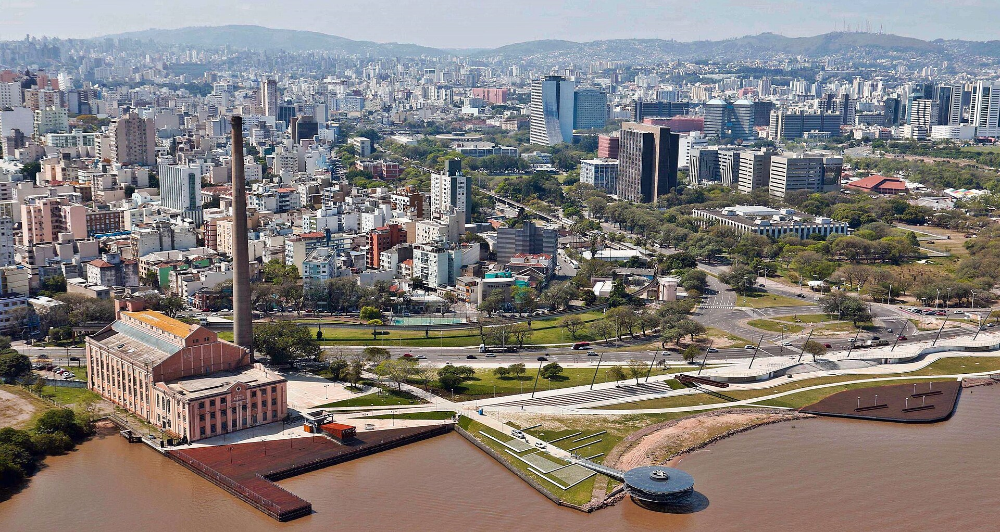
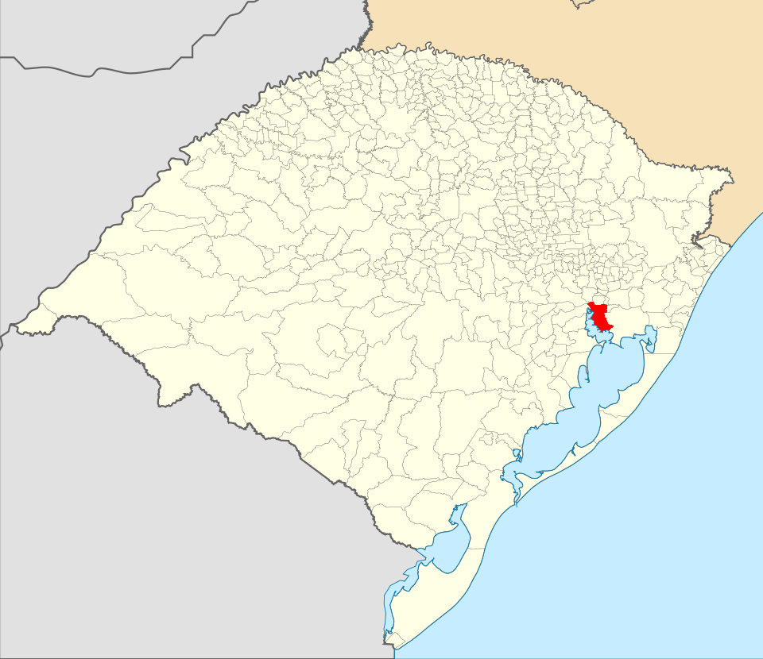
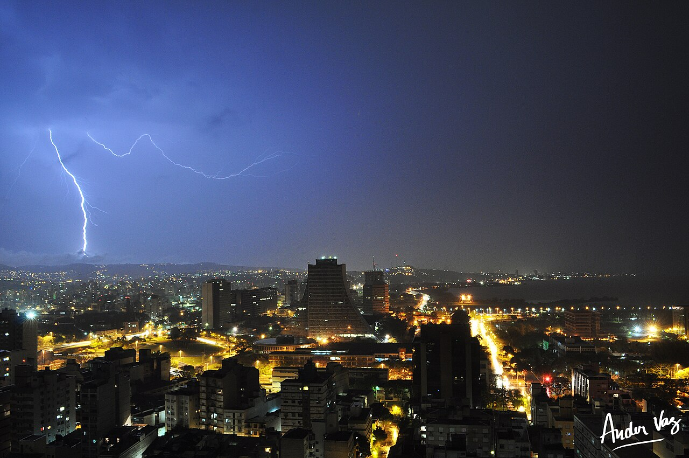

História
Porto Alegre estabeleceu-se como cidade somente no século XVIII. Até então, o território do Rio Grande do Sul ainda pertencia legalmente aos espanhóis devido ao Tratado de Tordesilhas (1494), mas, desde o século XVII, os portugueses já começavam a dirigir esforços para a sua conquista e foram progressivamente penetrando no território pelo nordeste, chegando através do Caminho dos Conventos (uma extensão da Estrada Real) à região da Vacaria dos Pinhais, e dali descendo para Viamão. A penetração foi realizada por bandeirantes que vinham em busca de escravos índios e por tropeiros que caçavam os grandes rebanhos de gado bovino, mulas e cavalos que viviam livres no estado. Mais tarde, os tropeiros passaram a se radicar no sul, transformando-se em estancieiros e solicitando a concessão de sesmarias. A primeira delas foi outorgada em 1732 a Manuel Gonçalves Ribeiro na Parada das Conchas, onde hoje é Viamão. Outra via de penetração foi através do litoral, fundando-se, em 1737, uma fortaleza onde hoje é Rio Grande, com o objetivo dar assistência à Colônia do Sacramento, no Uruguai.

Geografia
A cidade nasceu e cresceu em torno do primeiro atracadouro do rio Guaíba, o Porto de Viamão, construído no século XVIII pela sua vantajosa localização estratégica, na boca de acesso à vasta rede hidrográfica do interior da província, eficiente via de comunicação entre os povoados do interior com a capital, e era destino para a navegação marítima internacional, comercial e de passageiros, que entrava nas águas internas gaúchas pela barra da Lagoa dos Patos, em Rio Grande, encontrando em Porto Alegre pouso e mercados.

Clima
O clima de Porto Alegre é subtropical úmido (Cfa, segundo Köppen). A temperatura média anual é de 20 °C; o verão é quente e abafado e o inverno é fresco. Ao longo do ano, normalmente, a temperatura mínima nos meses mais frios é de 10 °C e a temperatura máxima nos meses mais quentes é de 31 °C e raramente são inferiores a 5 °C ou superiores a 35 °C. A presença da grande massa de água do Lago Guaíba contribui para elevar as taxas de umidade atmosférica e modificar as condições climáticas locais, com a formação de microclimas. O contínuo processo de cobertura da superfície do terreno por edificações e calçamento também gera microclimas específicos, observando-se até 4 °C de variação térmica nas diferentes regiões da cidade.
